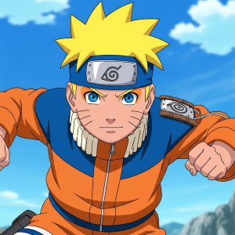
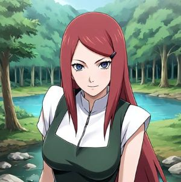
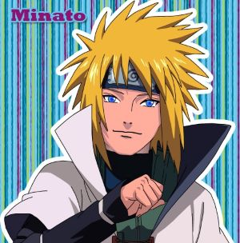

Naruto Uzumaki
As a child, he was ostracized due to having no parents. In addition, he was called the demon child as he was the jinchuriki of the nine-tails after his mother died protecting him. Soon in the story, after harsh training and control over the nine-tails they were able to attain great power that was capable of destorying his own land.

Kushina Uzumaki
Kushina Uzumaki was the wife of minato and the mother of Naruto. She was known for her red hair where it symbolizes people with great chakra reserves and proficient in using sealing techniques. In addition, she was also known as the second jinchuriki of the nine-tails.

Minato Namikaze
Minato was the Third Hokage of the Hidden Leaf Village. He was nicknamed the lightning flash due to his immense speed using the flying thunder god technique. He died by sacrificing when both Kushina and him protected naruto during it's infancy stage when the nine-tails was controlled by obito.